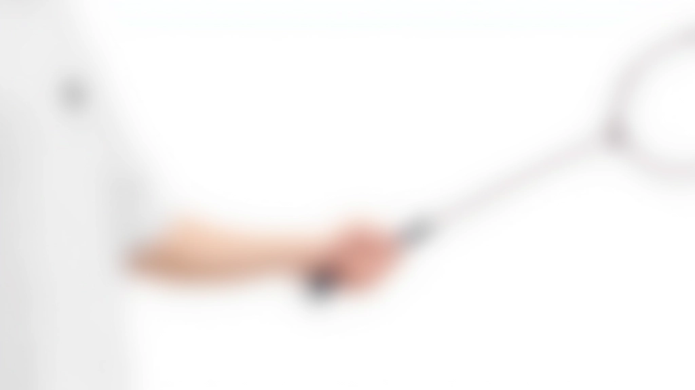
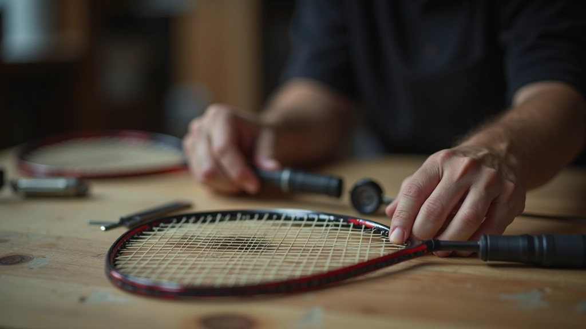

تقنيات الإمساك الصحيح بالمضرب
شرح تفصيلي لأنواع القبضة المختلفة وكيفية تطبيقها. تعلم الفرق بين القبضة الأمامية والخلفية.
دليل عملي لتحديد قوة الشد المثالية التي تناسب مستوى لعبك والمضرب الذي تستخدمه

قوة شد أوتار مضربك تؤثر بشكل مباشر على طريقة لعبك. شد قوي جداً يعطيك تحكماً أفضل لكن يتطلب قوة عضلية أكثر. شد ضعيف يجعل اللعبة أسهل لكن قد تفقد بعض الدقة. المفتاح هو إيجاد التوازن الذي يناسبك.
معظم اللاعبين المبتدئين يخطئون في اختيار شد قوي جداً لأنهم يظنون أنه سيحسّن من أدائهم. في الحقيقة، البداية الصحيحة تكون بشد متوسط يسمح لك بالتحكم والتعلم بشكل أفضل.
قوة الشد تُقاس بالرطل (lbs). المدى الشائع يتراوح بين 18 و 30 رطل. اللاعبون المبتدئون عادة يبدأون من 20-22 رطل.
الشد الضعيف يعني أن الأوتار لديها مرونة أكثر. هذا يوفر لك عدة فوائد خاصة إذا كنت تبدأ للتو.
لكن الشد الضعيف ليس مثالياً للجميع. إذا كنت تملك ذراع قوية بالفعل وتريد تحكماً أكثر دقة، قد تشعر أن الشد الضعيف يعطيك كثير من القوة ولا تحتاج إليها.


الشد القوي يوفر تحكماً أفضل وشعوراً أكثر دقة عند ضرب الكرة. هذا مفيد جداً عندما تتطور مهاراتك.
الجانب السلبي هو أنك تحتاج إلى قوة عضلية أكثر، والمضرب يصبح أقسى على ذراعك. إذا لم تكن معتاداً على هذا الشد، قد تشعر بإرهاق سريع.
هل أنت مبتدئ تتعلم الأساسيات؟ أم أنك وسيط وتريد تحسين التحكم؟ أم متقدم تلعب بشكل تنافسي؟ مستواك هو أول عامل في القرار.
إذا أمكنك، استعير مضرب مع شد مختلف من نادي أو صديق. العب به لفترة قصيرة وانظر كيف تشعر. هذا أفضل من القراءة فقط.
نصيحتنا: ابدأ بشد متوسط حول 22-24 رطل. هذا يعطيك التوازن بين السهولة والتحكم. بعد شهر أو شهرين، ستعرف إذا كنت تريد أقوى أو أضعف.
إذا شعرت بألم في الذراع أو الكتف بعد اللعب، قد يكون الشد قوياً جداً. قلل الشد بـ 2 رطل وجرب مجدداً.
أوتار المضرب تفقد شدها بمرور الوقت، خاصة إذا كنت تلعب كثيراً. تفقد حوالي 1-2 رطل كل شهر. لذلك، قد تحتاج إلى إعادة شد المضرب كل 4-6 أسابيع حسب مدى استخدامك له.
ملاحظة: هذه القيم إرشادية فقط. كل لاعب مختلف، وما يناسب صديقك قد لا يناسبك. الأهم هو أن تجرب وتستمع إلى احتياجات جسدك.
تفقد أوتارك بانتظام. إذا رأيت أنها ملتصقة أو متسخة، نظفها برفق. الأوتار النظيفة تعمل بشكل أفضل.
إذا أردت شد مضربك بنفسك، تأكد من استخدام أداة قياس قوة موثوقة. الشد غير المتساوي يسبب مشاكل في الأداء.
إذا أردت تغيير قوة الشد، غيّرها ببطء على عدة أسابيع. الانتقال المفاجئ من 20 إلى 28 رطل قد يؤذي ذراعك.
إذا كنت غير متأكد، لا تتردد في سؤال مدرب أو موظف متخصص في متجر الريشة الطائرة. هم يساعدون على هذا كل يوم.
اختيار قوة الشد المناسبة ليس علماً دقيقاً، بل هو مزيج من فهم الأساسيات والتجربة الشخصية. ابدأ بشد متوسط حول 22-24 رطل إذا كنت مبتدئاً. اسمع جسدك وركز على الشعور والراحة أثناء اللعب. مع الوقت، ستجد الشد الذي يناسبك تماماً.
تذكر أن الشد المثالي ليس هو الأقوى أو الأضعف، بل هو الذي يجعلك تشعر براحة وثقة عند اللعب. لا تخاف من التجربة والتعديل حتى تجد ما يناسبك.
هذا المقال مخصص للأغراض التعليمية والإعلامية فقط. القيم والتوصيات المذكورة هنا إرشادية وتعتمد على التجارب الشائعة بين لاعبي الريشة الطائرة. كل شخص مختلف، وما يناسب شخصاً قد لا يناسب آخر. إذا كان لديك آلام أو مشاكل صحية متعلقة باللعب، استشر متخصصاً في الرياضة أو طبيباً قبل إجراء تغييرات كبيرة على معدات لعبتك.

فريق المحتوى التحريري
أعده فريق ريشة الاحتراف التحريري، متخصص في تقديم إرشادات عملية وسهلة المتابعة.
شرح تفصيلي لأنواع القبضة المختلفة وكيفية تطبيقها. تعلم الفرق بين القبضة الأمامية والخلفية.

نصائح عملية لفحص أوتار مضربك والعناية بها. تعرّف على الأدوات البسيطة التي تحتاجها.

فهم العلاقة بين شد الأوتار والقبضة الصحيحة وأثرهما على قوة الضربة والتحكم.